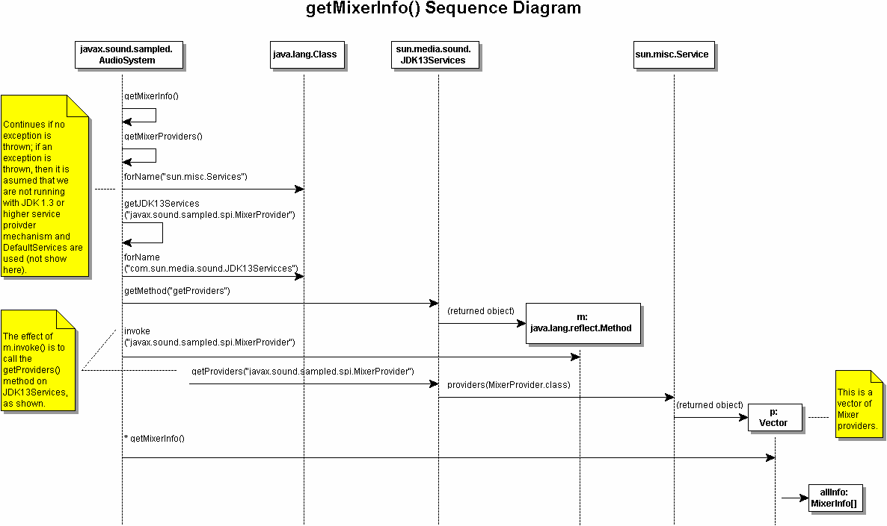

AudioSystem.javaFor the benefit of service providers and API implementers, a brief overview of the Java Sound source code is provided.
javax.sound.sampled.AudioSystem is the entry point
to JavaSound for obtaining resources; i.e., mixers, lines, etc. And
each method of AudioSystem involves getting the
providers of some service—MixerProvider[],
FormatConversionProvider[],
AudioFileReader[], or AudioFileWriter[].
Then the method goes on to obtain some specific information or
perform some task. There is much similarity in how these methods
work. Let us take a look at how getMixerInfo()
works.
The following is a sequence diagram of
getMixerInfo() in AudioSystem.java:

getMixerInfo() in
AudioSystem first calls
getMixerProviders(), a private static
method of AudioSystem. The first thing that
getMixerProviders() does is attempt to load
sun.misc.Service. If an exception is thrown, it means
that a pre-1.3 JRE is in use and there is no service provider
lookup mechanism present. If an exception is thrown, then
sun.media.sound.DefaultServices is used to obtain
service providers (not depicted in above diagram). If the 1.3
mechanims is present, then getJDK13Serives() is called
(shown above) with
"javax.sound.sampled.spi.MixerProvider" as
the argument.
getJDK13Services() is another
private static method of AudioSystem. It
attempts to the load the class for
"com.sun.media.sound.JDK13Services", and if
it succeeds it set Class jdk13Services equal to it. A
bit of trickery is then performed by using
Class.getMethod() to get the
getProviders() method of jdk13Services,
which is returned as object Method m. The method is
then invoked, which has the effect of invoking
getProviders("javax.sound.sampled.spi.MixerProvider")
on JDK13Services. This in turn uses the
providers() method of sun.misc.Service to
return a vector of mixer providers, MixerProvider[].
The getMixerInfo() method of
MixerProvider is then called on each element of the
vector to return info (Mixer.info) for all mixers of
all mixer providers.
Other services are handled in a similar way. For
instance, getTargetEncodings() calls
getFormatConversionProviders(),
getAudioFileFormat() calls
getAudioFileReaders(), etc., which are similarly
structured to getMixerProviders().